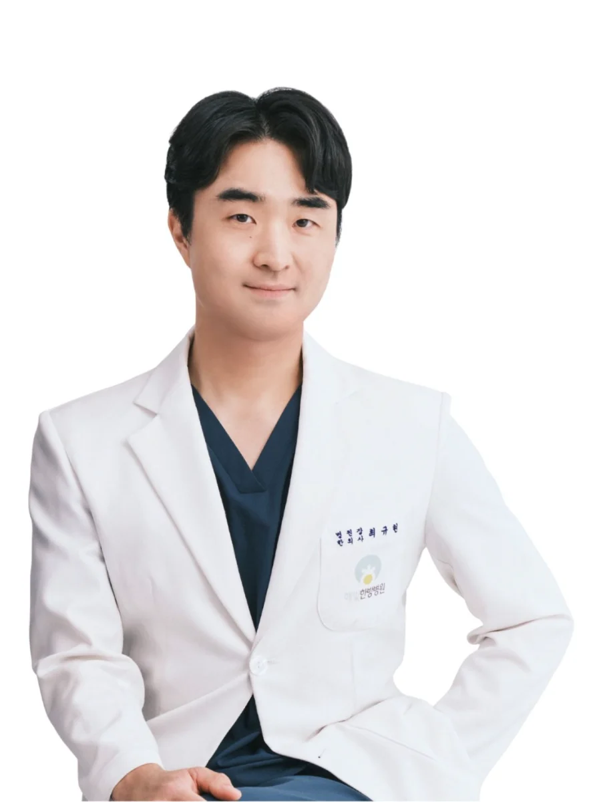
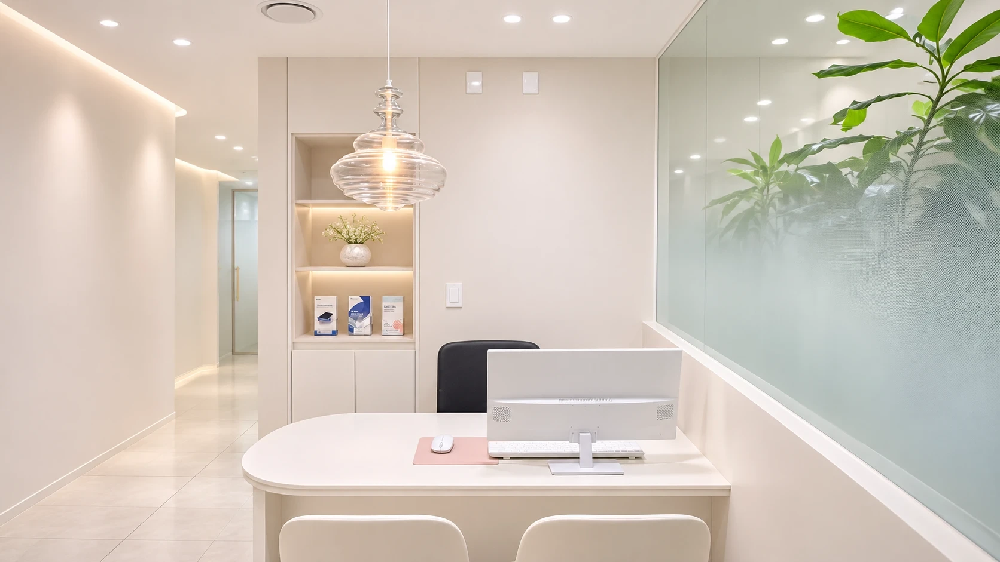
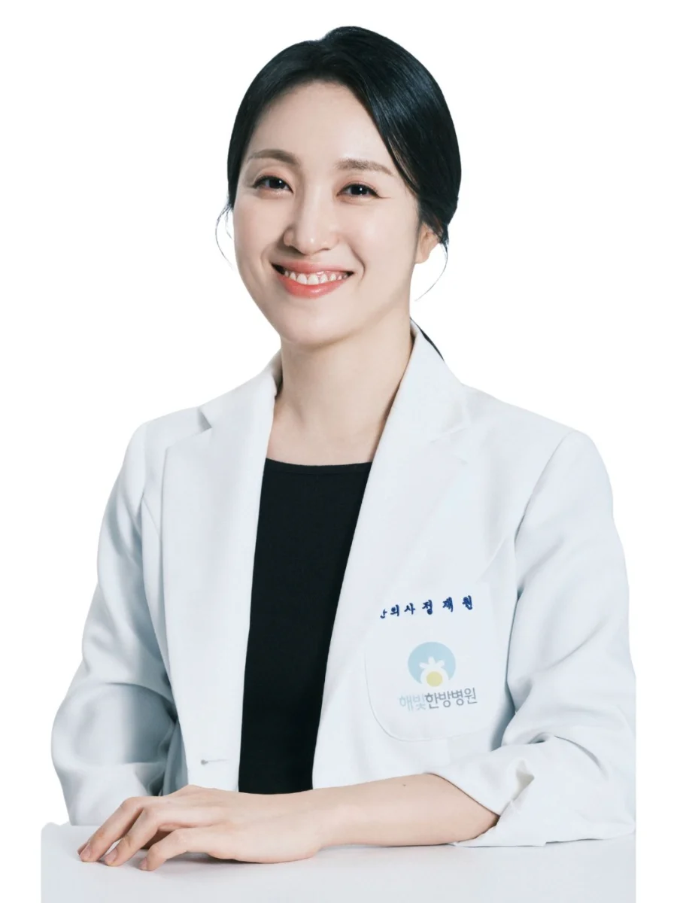
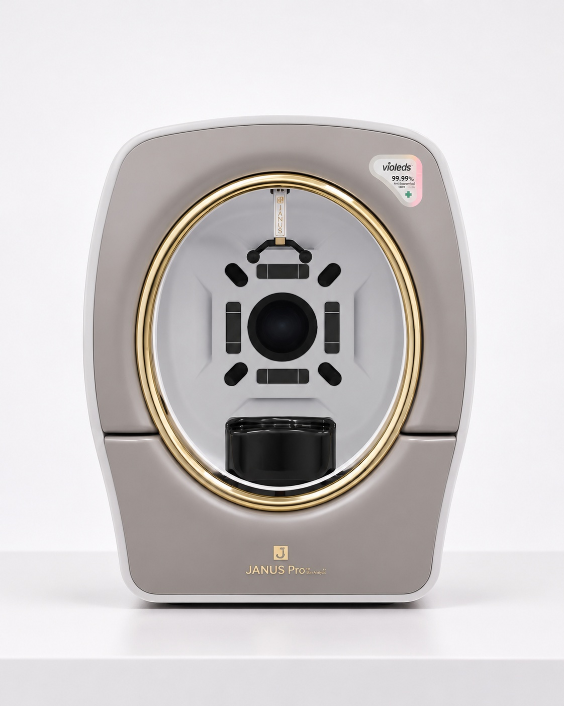
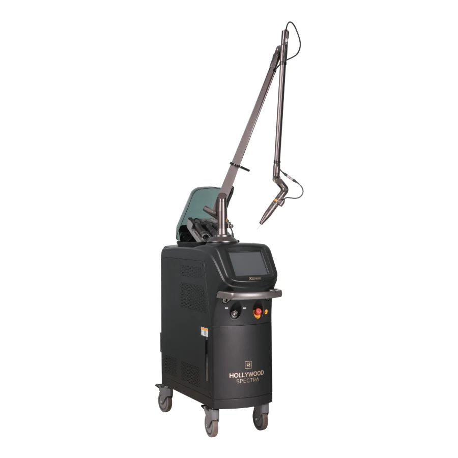
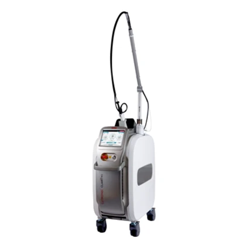
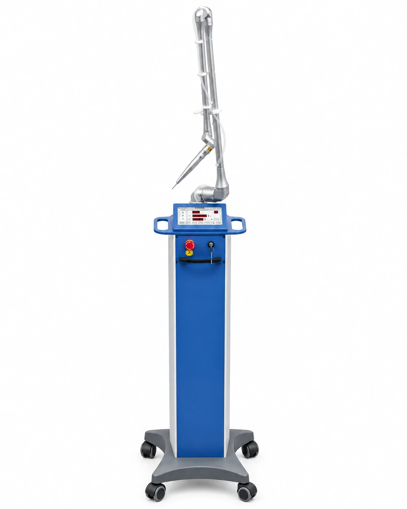

한방 1과최규현 대표원장
약력
- 서울대학교 재료공학부 졸업
- 동국대학교 한의학과 졸업
- 척추신경추나의학회 정회원
- 대한한의사협회 네이버 지식iN 의료상담 한의사
- 대한상한금궤의학회 회원
- Osteopathic Institute of Korea 수료
- 대한통합암학회 평생회원
경력
- 전 무의도한방병원 진료원장
- 전 하성한방병원 진료원장
- 전 태극부부한의원 대표원장
- 전 수람한방병원 대표원장
- 현 해빛한방병원 대표원장 (한방 1과)

해빛한방병원의 슬로건 "habit makes you"처럼,
피부가 더 어려지고 건강해져
근원적인 아름다움에 도달하도록 하려 합니다.
해빛이 함께 합니다.
해빛 한방피부클리닉은 피부의 회복력을 도와 나의 피부재생력에 첨단과학을 더한 진료를 지향합니다. 내 피부의 약점을 파악하여 근본적인 피부 밸런스를 회복하는 더 건강하고 더 예뻐지는 선물같은 습관, 해빛한방병원.
한방병원의 피부클리닉이라는 정체성을 생각하며, 내 피부의 건강을 최우선해서 생각하고 그 위에 최선의 아름다움을 찾는 솔루션.
해빛한방병원 피부클리닉은 내 피부가 숨쉬고 살아있는 하나의 생명체로 보고, 이 생명이 더 밝고 빛나는 생명력을 가질 수 있도록 합니다.
피부클리닉을 담당하는 의료진을 소개합니다.



야누스 프로 선라이크 Janus Pro Sunlike
단순히 눈에 보이는 증상만으로는 피부의 깊은 고민을 모두 해결할 수 없습니다.
본원은 세계적으로 우수성을 인정받은 첨단 피부 진단기기인 야누스 프로(Janus Pro)를 피부진단에 활용하고 있습니다.
정밀 광학 기술을 통해 피부 표면의 문제점은 물론, 육안으로 보이지 않는 잠재적 색소 침착, 모공의 깊이, 주름, 그리고 3차원 입체 윤곽 분석까지 정밀하게 측정하여 분석합니다.
객관적 데이터와 과학적 분석을 바탕으로 현재 환자분의 피부 상태를 정확하게 진단하고 이에 가장 적합한 1:1 맞춤형 치료 계획을 수립합니다. 막연한 추측이 아닌, 데이터와 과학적 진단의 기반 위에 의학과 미적 감각의 시너지로 열리는 건강하고 아름다운 피부 변화를 기대하세요.
장비 이름보다 내 피부에 맞는 순서가 먼저입니다. 각 장비는 해당 시술 페이지에서 자세히 안내합니다. 확인 필요 · 장비 사진 촬영 후 교체

토닝·카본필

색소·홍조·제모

모공·점·비립종·흉터
스킨부스터
진정·재생·이온 관리
피부 진단
병원 진료시간 기준입니다. 확인 필요 · 스킨랩 운영시간